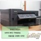
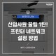

-
- MFC가 뭔지 알려주세요! 2019.06.02
- 프로그래밍언어 중에 MFC가 뭔가요??
-
MFC는 C프로그래머의 편리를 위해 나온거지만 구조가 다소 복잡하여 처음 배우려면 머리아픕니다~ (저는그랫어요;) 그래도 익숙해지면 이것처럼 편한게 없다니 열심히 공부중입니다~는 C프로그래머의 편리를 위해 나온거지요 이제 아시겠습니까? 예?????
- 컴퓨터사전 > IT
-
- MFC란 무엇인가?.. 자세히 좀 알켜주세요.. 최대한 빨리요 2019.07.29
- c++ 인가요... MFC를 작성 해서 비주얼 컴파일러로 실행 하는건가요..구체적으로 알켜주세요
-
MFC가 궁금하시다구요? 우선 약자그대로 뜻을본다면 Microsoft Foundation Class로서 마이크로소프트에서 개발한 기본 클래스 라이브러리입니다.
- 용어해설 > 컴퓨터/통신
지식iN
8,796건블로그
9,796건-

- MFC는 무엇일까요? 2014.11.02
- 윈도우계열에 제공되는 API함수들은 모두C언어로 작성되어있습니다 MFC는 API함수를 사용하여 좀더쉽게 윈도우즈 프로그래밍을 하기위해 만들어졌습니다. 기반언어는C++이고요
- CmelCmel 개발자 세상
-

- MFC란? 2016.06.12
- MFC를 소개 해드리겠습니다. Mass Flow Controler의 줄임말이죠 이제부터는 MFC라고 말씀드리겠습니다. 제가 사용해봤던 제품들은 Bronkhorst, Brooks, MKP 등이 있었지요 사용하시는 분들마다 선호하시는 Maker에 따라 호불호가 나눠지는듯 합니다만 개인적으로는 기능이나 정밀도에서는 크게 차이가 나지 않는것 같았습니다.
- CmelCmel 개발자 세상
시리즈
1건-
- MFC 개봉일 : 2014.11.02
-
내용 아버지의 죽음에 대한 죄책감에 시달리던 ‘심바’는 의욕 충만한 친구들 ‘품바’와 ‘티몬’의 도움으로 희망을 되찾는다.
- 상영시간2시간20분 관람등급12세 관람가 배우존 파브로
BAND
1,796건-
-
BAND명 :
재헌이의 MFC세상 / 창설일 : 2016.01.14 - MFC를 소개 해드리겠습니다. Mass Flow Controler의 줄임말이죠 이제부터는 MFC라고 말씀드리겠습니다. 제가 사용해봤던 제품들은 Bronkhorst, Brooks, MKP 등이 있었지요 사용하시는 분들마다 선호하시는 Maker에 따라 호불호가 나눠지는듯 합니다만 개인적으로는 기능이나 정밀도에서는 크게 차이가 나지 않는것 같았습니다.
-
-
-
BAND명 :
재헌이의 MFC세상 / 창설일 : 2016.01.14 - MFC를 소개 해드리겠습니다. Mass Flow Controler의 줄임말이죠 이제부터는 MFC라고 말씀드리겠습니다. 제가 사용해봤던 제품들은 Bronkhorst, Brooks, MKP 등이 있었지요 사용하시는 분들마다 선호하시는 Maker에 따라 호불호가 나눠지는듯 합니다만 개인적으로는 기능이나 정밀도에서는 크게 차이가 나지 않는것 같았습니다.
-
TV
4,506건-
- 아이티동스쿨 MFC강좌 샘플 영상
- 달님 블로그2019.02.12
-
- MFC란?
- MFC를 소개 해드리겠습니다. Mass Flow Controler의 줄임말이죠 이제부터는 MFC라고 말씀드리겠습니다. 제가 사용해봤던 제품들은 Bronkhorst, Brooks, MKP 등이 있었지요 사용하시는 분들z마다 선호하시는 Maker에 따라 호불호가 나눠지는듯 합니다만 개인적으로는 기능이나 정밀도에서는 크게 차이가 나지 않는것 같았습니다.
- 청주지웰해상기지2019.04.12